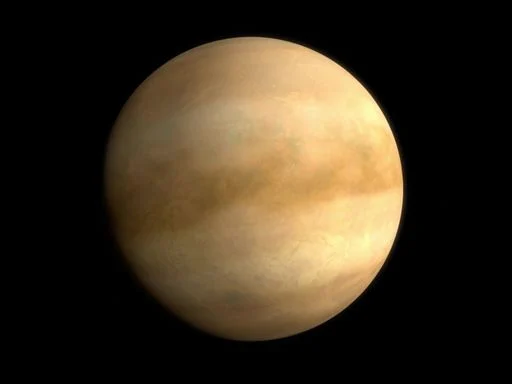

Nosso sistema solar possui 8 panetas principais, eles sendo
Mercúrio

Mercúrio apesar de ser o planeta mais próximo do Sol, ele não é o mais quente do sistema solar. Isso acontece porque Mercúrio não possui uma atmosfera significativa para reter o calor.
Saturno
Saturno é famoso por seus impressionantes anéis, que são compostos principalmente de gelo e partículas de rocha. Os anéis são muito extensos, mas têm apenas alguns metros de espessura. Além disso, Saturno possui mais de 80 luas conhecidas
Marte

Marte possui estações do ano semelhantes às da Terra, devido à inclinação do seu eixo, que é de aproximadamente 25 graus. Isso significa que Marte experimenta mudanças sazonais, como verão e inverno, embora as durações das estações sejam diferentes.
Netuno

Netuno possui os ventos mais rápidos do sistema solar. Esses ventos podem atingir velocidades de até 2.100 km/h. Isso é quase supersonico e se deve à intensa dinâmica atmosférica do planeta.
venus
Vênus é o planeta mais quente do sistema solar, mesmo sendo o segundo mais próximo do Sol. As temperaturas na superfície de Vênus podem ultrapassar 470 °C.
Jupiter

Júpiter possui uma enorme tempestade chamada a Grande Mancha Vermelha, que é tão grande que poderia acomodar mais de duas terras dentro dela! Essa tempestade é uma gigantesca tempestade anticiclônica que já está ativa há pelo menos 350 anos e provavelmente existe há muito mais tempo.
Terra

Terra é o único planeta conhecido que possui água líquida na superfície, o que é essencial para a vida como a conhecemos. Cerca de 71% da superfície da Terra é coberta por água.
Urano

Urano é o único planeta do sistema solar que gira de lado. Seu eixo de rotação está inclinado em cerca de 98 graus em relação ao seu plano orbital. Isso significa que, em vez de girar "em pé" como os outros planetas, Urano rola em sua órbita.

Telescópio
Sendo vendido por R$250,00
Ele pode ser usado para apreciar a vastidão do universo

Globo
Sendo vendido por R$60,00
Podendo ser usado para apreciar e encontrar lugares do nosso planeta
Nave de brinquedo
Sendo vendida por R$500,00
Um ótimo presente de natal para os apaixonados por Star Wars
Livro educativo sobre o sistema solar
Sendo vendido por R$30,00
Muito útil para despertar o interesse dos mais jovens
Bolas personalizadas iguais aos planetas
Sendo vendidas por R$10,00 cada
Porque não?
Sol de bolso
sendo vendido por R$(número muito grande)
Um sol de bolso, agora você não sentira mas frio, ou não sentira mais nada :)